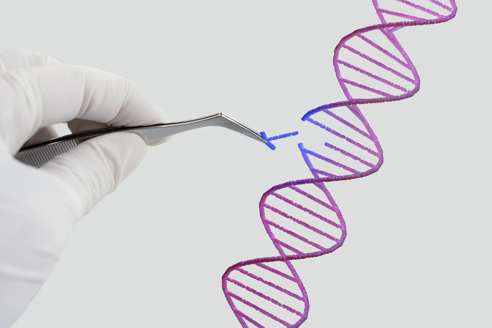
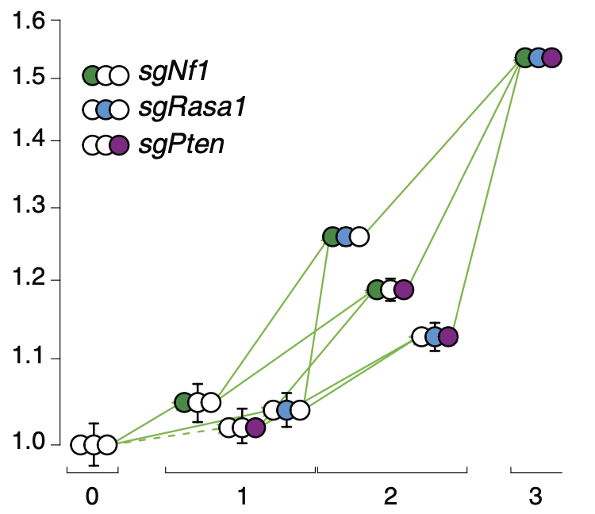

Centre for Ecological Research - Institute of Evolution
Cancer Evolution Lab
Cancer as a disease of mutations
Human cancers harbor a multitude of mutations, which presents a two-fold problem. From human cancer genomics data, finding synergistic pairs of genes is statistically extremely challenging due to each human tumor differing from each other in many alleles, representing vastly different genetic backgrounds that show up as noise in the data and greatly reduce the power of any statistics. To solve this problem, controlled experiments can be devised. However, these experiments generally investigate single mutations. Due to the phenomena of genetic interaction, predicting effects of multiple mutations on tumorigenesis from experimentally measuring only single mutations is inaccurate. Therefore, to understand how multiple genetic alterations drive cancer, we need experimental in vivo methods to measure complex genotypes on a large scale.
CRISPR and DNA-barcodes

CRISPR emerged as an extremely handy tool and changed the industry overnight. It is widely used in basic research, biotech industry and therapy. We are taking advantage of CRISPR Cas9 technology to introduce cancer driving mutations to cells to see how they affect tumor growth and other characteristics. To get back high-throughput data, we are using DNA-barcodes. Our system is based on the Tuba-seq technology developed at Stanford University. We are making improvements by enabling Tuba-seq to scan a comprehensive set of complex mutations and to do so with simple experiments.
Understanding epistasis - the interactions of genetic alterations

We are using the technical advances to answer fundamental evolutionary questions in cancer. Namely, how a few mutations that in themselves wouldn't necessary change a cell's behaviour much, cooperate together to result in cancerous tumor growth. This phenomenon is known in evolutionary biology as genetic interaction or epistasis. We are creating epistasis maps in cancer by measuring thousands of tumor sizes of hundreds of different genotypes. Then we try to create theoretical models that explain the data we get from our experiments.
Adaptive (fitness) landscapes of cancer evolution

We create from our measurements fitness landscapes. These are theoretical evolutionary models that are extremely useful to intuitively visualize and understand adaptation. They help us to understand the adaptive journeys that are underlying cancer progression. By generating realistic and predictive models of this evolutionary process, we are hoping to gain an understanding of how fitness landscapes predetermine mutational order and effect resistance to therapy, recurrence and might lead to vulnerabilities of tumors.